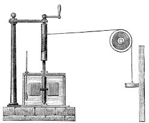
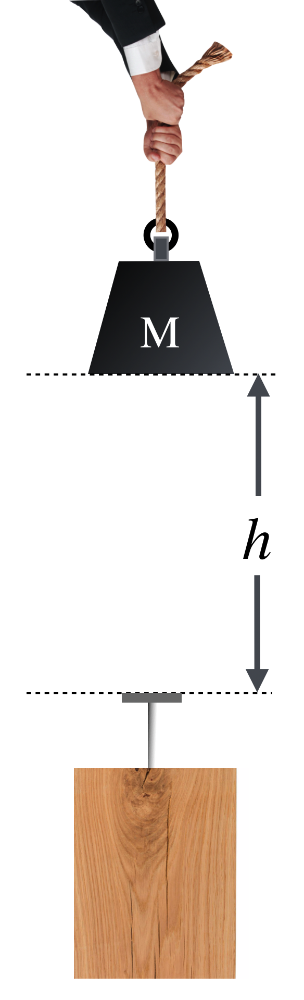
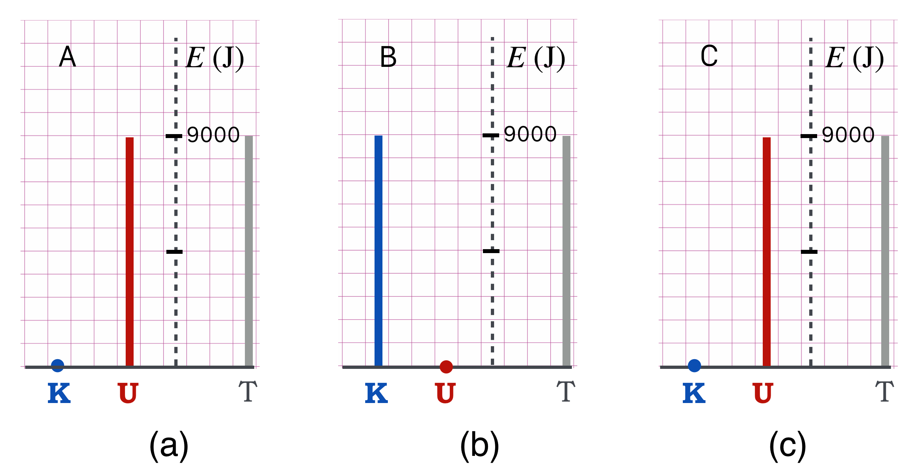
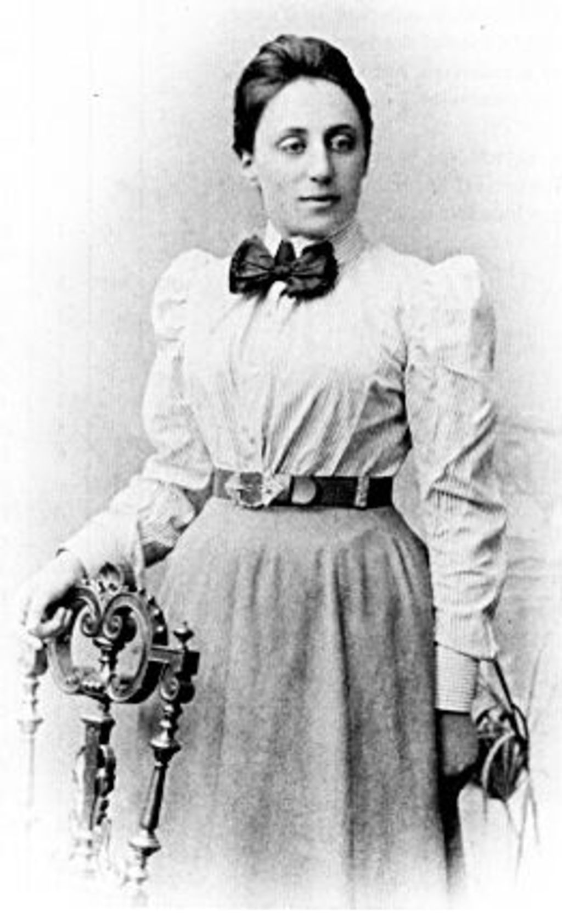

6 Skinny Energy
Mechanics
Energy
Physics
Skinny Physics: the Energy Edition. First, just the formulas then, some minimal narrative. (If you’d like more, including history and examples, visit full textbook.)
6.1 Different way
6.2 Just the facts:
6.2.1 some definitions
kinetic energy, K
\[\begin{equation} K = \dfrac{1}{2}m v^2 \nonumber \end{equation} \]
work, W
\[\begin{equation} \text{work}=W=F\Delta x=\Delta(\dfrac{1}{2}mv^2). \end{equation}\]
potential energy, U
\[\begin{equation} \text{work}=W=F\Delta x=\Delta(\dfrac{1}{2}mv^2). \end{equation}\]
Energy Conservation, T
\(K_0, K\): initial, final kinetic energy
\(U_0, U\): initial, final potential energy
\(T\): the total energy
\[ \begin{align*} K_0 + U_0 &= K + U = T \\ \dfrac{1}{2}m v_0^2 + mgh_0 &= \dfrac{1}{2}m v^2 + mgh = T \end{align*} \]
6.3 Pointers to topics:
7 Gentle explanations of Energy
7.1 The Mechanical Equivalent of Heat
In the 1840s, the Manchester brewer, James Prescott Joule conducted experiments that revolutionized our understanding of energy. In a family of brewers, he had access to precision thermometers (essential for brewing) and applied his systematic experimental approach to studying heat.
Joule’s key experiment involved stirring water with paddles turned by falling weights. He found that a specific amount of mechanical motion would raise the temperature of water by a predictable amount. His insight: Heat and motion are both forms of energy which can be converted back and forth—and not disappear.
We remember him for this demonstration:
\[\begin{align*} \text{mechanical motion } \to &\text{ heat} \\ \text{ and heat } \to &\text{ mechanical motion:} \\ &\text{ his early notion of energy conservation} \\ \text{gravitational height differences } \to &\text{ heat} \\ \text{electrical resistance } \to &\text{ heat} \\ \end{align*}\]
He realized that this led to a principle: Energy is conserved. What you put into a system by mechanical means, you’ll get back in heat and vice versa. Nothing’s lost. Nothing’s spontaneously created.
The unit of energy, the Joule (J), was named in his honor in 1889: - 1 Joule = 1 kg·m²/s² - It takes 4.184 J to raise 1 cm³ of water by 1°C
7.2 Ability to Do Damage: Kinetic Energy
Okay. “Ability to Do Damage” isn’t a scientific phrase…but I’ll bet you’ll remember it better than our very specific use of a very regular word: “work.” If you want to do damage to something, you initiate contact and speed matters. Want to demolish something with a hammer? Swing it fast. Want to smash something by dropping a rock? Drop it from high up.
But mass figures in too. A hammer made out of balloons is not a damage-maker. So the question is: what’s more important, mass or speed?
7.2.1 The Baseball Example
Let’s go back to high school.
Wait. No! No no no no!
Calm down. It’s just a cheap story device.
Principal Crotchety took away the catchers mitts from the boys baseball and girls softball teams, so each catcher must catch a pitched ball with his or her bare hands.
A regulation softball has a mass of about 0.22 kg while a regulation baseball has a mass of just about half of that, 0.145 kg. Here’s the question: An average high school softball pitch is about 50 mph – 10 or 15 mph faster than that, and you’ve got a college pitcher on your hands. But a 50 mph baseball is not so impressive: that’s less than batting practice speeds. Consider these two trade-offs, and think about having to bare-hand catch the following:
Replace a baseball thrown of 50 mph with a softball of the same speed – a factor of 2 increase in mass, but same speed?
Replace a baseball thrown at 50 mph with a baseball thrown at 100 mph – a factor of 2 increase in speed but the same mass?
Which pitch would do proportionally more “damage”—hurt more? I’d take the first example any day.
Galileo observed pile drivers and found that doubling the drop height produces four times the penetration depth. This suggested that damage is related to the square of velocity.

Catching a baseball is an \(A+B \to C\) type of collision. Separate catcher, Herman plus the ball \(\to\) sincle object, Herman/ball. From your experience, you know that if someone throws you a ball and you catch it, that you’re (Herman/ball) probably not going to be carried backwards at a high speed.
(Under Construction 🚧 👷♂️ \(\to\) placeholder for an example 🔎 deeper_catcher)
7.2.2 Kinetic Energy In Practice
Christiaan Huygens and Gottfried Leibniz independently concluded that in certain collisions, mv² is conserved. Today we call it
\[\begin{equation} \text{Kinetic Energy: } K = \frac{1}{2}mv^2 \end{equation}\]
7.2.3 Example
For a 50 mph (22 m/s) baseball: \[K_0 = \frac{1}{2}(0.145 \text{ kg})(22 \text{ m/s})^2 = 35.1 \text{ J}\]
When caught by a 54 kg catcher, the combined kinetic energy after is only about 0.1 J.
Wait. This surprises me. Where did all that speed go?
Glad you asked. In this (perfectly constructed) example, there’s only an imperceptible speed after that fast ball hits its target (Herman). Stay with me, and we’ll find where the speed went!
7.3 Classification of Collisions
If you think about colliding objects, they can be categorized into three different kinds.
7.4 Collisions in words
We can do this by “makes sense” or with equations. Let me do the former in reverse order from how we usually do this in physics.
In the baseball story, at the beginning there were two separate objects: the catcher and the ball. After the collision there was one object, what I called the Herman/ball. Physically they’re all one object now. This is called a Totally Inelastic Collision, where objects stick together.
There are other collisions where there might be two objects at the beginning and two separate objects at the end. Like a ball and a bat or two billiard balls. Let’s imagine the latter: when one ball strikes the other, you can hear it. That means that there was enough vibration to start air molecules moving which reach your ear and create sound. That means that there is in some way three components to analyzing this motion: two balls at the beginning, two balls at the end, and air molecules vibrating at the end. As far as the balls alone are concerned, energy is not conserved since the air was excited into motion and so has kinetic energy. This is called an Inelastic Collision. (By the way, heat is also generated which is the Joule-kind of energy, so the room eventually warms up slightly…another way to lose kinetic energy.)
Then there are ideal collisions if you’re talking about actual macroscopic objects in the world. Elastic Collisions only happen for elementary particles. You know…like in .
7.5 Collisions in symbols
Now let’s speak “physics,” if not “skinny.”
7.5.1 Elastic Collisions
- For objects with no internal parts (elementary particles, or idealized rigid spheres)
- Here, both momentum and kinetic energy are conserved
- Real-world approximation: very hard billiard balls
- Physics reality: electron-electron collisions are perfectly elastic
For elastic collisions between two objects:
\[\begin{equation} \vec{p}_0(1) + \vec{p}_0(2) = \vec{p}(1) + \vec{p}(2) \label{momentumc12} \end{equation}\]
\[\begin{equation} \frac{1}{2}m(1)v^2_0(1) + \frac{1}{2}m(2)v_0^2(2) = \frac{1}{2}m(1)v^2(1) + \frac{1}{2}m(2)v^2(2) \label{energyc12}\end{equation} \]
Equation \(\ref{momentumc12}\) is the conservation of momentum and Equation \(\ref{energyc12}\) is the conservation of kinetic energy.
7.5.2 Inelastic Collisions
- Objects have internal parts (all everyday macroscopic objects)
- Momentum is (always) conserved
- Kinetic energy is NOT conserved (some converts to heat, sound, deformation)
7.5.3 Totally Inelastic Collisions
- Objects stick together after collision
- Momentum is (always) conserved
- Maximum kinetic energy is lost to internal motions
Key Rule: You can always count on momentum conservation. You can only count on kinetic energy conservation for elastic collisions.
7.6 Let’s Talk About Damage
Where does the kinetic energy go in an inelastic collision? Into the internal parts of the objects.
When a baseball hits a catcher’s hand: - Skin, fascia, muscles, blood, tendons, ligaments, and bones all absorb momentum - These parts move internally, compressing, twisting, bending - The ball also distorts, compresses, and vibrates - Air is compressed and heated along the ball’s path - You hear the impact—sound waves carry energy away - Eventually, all this motion becomes heat at the molecular level.
(Under Construction 🚧 👷♂️ \(\to\) placeholder for an example 🔎 deeper_fractionK_1)
This is why speeding bullets do so much damage despite being light. A musket ball (13.9 g at 250 m/s) transfers little momentum to a person, but loses 99.994% of its kinetic energy internally—all doing tragic damage.
For elementary particles with no parts, collisions are completely elastic—no energy loss to internal motions.
7.7 Work
To understand energy transfer precisely, we need the concept of Work.

When the ball impacts and stops in Herman’s glove, the hand applies an average force F on the ball, slowing it to a stop. This force acts through a distance d (the compression depth) and the product F × d equals the change in kinetic energy:
Work is force applied through a distance: \[W = F\Delta x\]
This equals the change in kinetic energy: \[W = F\Delta x = \Delta\left(\frac{1}{2}mv^2\right)\]
Compare this to Impulse: \[J = F\Delta t = \Delta(mv)\]
(Under Construction 🚧 👷♂️ \(\to\) placeholder for an example 🔎 deep_work_1.)
Here’s a different take on what we’ve done so far:
7.8 That Stop Shot
Now, we can go back to the incomplete example of that pesky stop-shot from the previous chapter where we were left hanging. Remember: one billiard ball is stationary and minding its own business when another identical ball collides with it. The result is that the previously stationary ball moves away with the same speed of the projectile ball, while it stops dead. “Stop shot.”
Our embarrassment with the stop-shot was that Newton/Huygens momentum conservation could not uniquely predict the obvious observation of the beam-ball stopping dead while the target-ball shoots off when it’s struck. We can now fix that. Without emphasizing it then, now we have to assert that these billiard balls are perfectly elastic.
In this example, I solve that problem and billiard balls all over the world will go back to behaving the way that they should:
(Under Construction 🚧 👷♂️ \(\to\) placeholder for an example 🔎 example_stopshot_1_E3)
If we’d used real billiard balls which are made up of molecular parts, then kinetic energy would not have been conserved. Energy would have been lost and a large part of it would come from the sound creation by their quick compression and release. You hear that collision. But all of the above discussion had “lost” kinetic energy becoming heat. And Mr Joule determined that heat was just another form of energy. So now we’re on to something.
7.9 Eager to Do Damage: Potential Energy
If kinetic energy is the act of causing damage, Potential Energy is just what the name implies…“the potential” for causing damage! Hold a barbell above your foot and let it go, it will change the shape of your foot when it lands, and maybe the floor as well. That suspended weight possess the potential for doing Work, which it does upon landing and slowing down…through your foot and the floor. Notice that because it is held above your foot, going back to that last bullet above, its position is the determining thing: its height above the floor. Until it’s released, it’s held back from falling.
An object has Potential Energy when it’s positioned to potentially do work if released.

For gravitational potential energy: \[\begin{equation} U = mgh \label{potentialE} \end{equation}\]
where h is the vertical distance above the point defined as zero potential energy.
Important: You can define the zero of potential energy anywhere convenient. What matters is the difference in potential energy between positions.
How much is potential energy? Here’s a rule of thumb that should set the scale for energy for you. An apple has a mass of about 0.1 kg. The acceleration due to gravity is 9.8 m/s$^2$, which we’ll call about 10 m/s$^2$. If I hold an apple about a meter (~3 feet) above a table, then how much potential energy does it have relative to the table?
\[ U=mgh = (0.1 \text{ kg})(10 \text{ m/s}^2)(1 \text{ m}) =1 \text{ J} \]
A Joule.
If the table top is itself a meter above the floor, then the apple would have a potential energy relative to the floor of 2 J.
8 The Exchange of Kinetic and Potential Energies
Where does that potential energy of the apple go? Obviously, as it falls it loses potential energy since the “$h$” in Equation \(\ref{potentialE}\) changes as it falls.
But you know what else happens: the apple gains speed. So it loses potential energy and gains kinetic energy. What I’ve described is a conservation rule (remember that the subscript o means “initial” or “beginning” and any variable that changes in time gets no subscript):
\[ \begin{align} K_0 + U_0 &= K + U = \text{Total Energy} \tag{a} \\ \frac{1}{2}mv^2_0 + mgh_0 &= \frac{1}{2}mv^2 + mgh \tag{b} \end{align} \tag{8.1}\]
Equation 8.1 is the statement of mechanical energy conservation.
For the apple, it is dropped without any kinetic energy, so the first \(K_0\) on the left is zero. And if we define the zero point of the potential energy to be the distance to the table, then all of its potential energy is spent when it reaches it. So the \(U\) on the right is zero. So we end up with \(U_0 = K\), or all of the potential energy becomes kinetic energy.
\[ \begin{align} LEFT &= RIGHT \tag{a} \\ LEFT &= RIGHT \tag{b} \end{align} \]
Equation \(\ref{KUconservation}\) is the general relationship for the conservation of energy…not just kinetic energy, but the Conservation of Energy.
(Under Construction 🚧 👷♂️ \(\to\) placeholder for an example 🔎 example_dropping_energy_1
Let’s use “thermometer diagrams” to graphically represent Equation 8.1 (b) and visually parcel out the interchange between potential and kinetic energies:

Read this with the Total energy (T) on the right and keep track of separate “thermometers” for Kinetic energy (K) and Potential Energy (U) on the left. They need to add up to T.
For a 0.1 kg apple dropped from 1 m (using g = 10 m/s²):
At release (a):
- K = 0 (not moving)
- U = mgh = (0.1)(10)(1) = 1 J - Total T = 1 J
At 0.3 m height (b):
- U = mgh = (0.1)(10)(0.3) = 0.3 J
- K = T - U = 1 - 0.3 = 0.7 J - Total T = 1 J
Just before impact (c):
- U = 0 - K = 1 J
- Total T = 1 J
8.0.1 Example: Water Slide

For a 90 kg person starting from rest at point A (h = 10 m):
Total energy: \(T = mgh = (90)(10)(10) = 9000\) J = 9 kJ
At point B (bottom): - U = 0 - K = 9 kJ - Velocity: \(v = \sqrt{2K/m} = \sqrt{200} = 14\) m/s ≈ 30 mph
The conservation equation holds throughout: \[K(A) + U(A) = K(B) + U(B) = K(C) + U(C)\]

8.1 Symmetry and Conservation Laws

Emmy Noether, working with David Hilbert at Göttingen, proved one of the most profound theorems in physics.
8.1.1 Noether’s Theorem
Every symmetry in the laws of physics corresponds to a conservation law.
Space translation symmetry (physics works the same everywhere)
→ Conservation of momentum
Time translation symmetry (physics works the same at all times)
→ Conservation of energy
This means conservation laws aren’t mathematical accidents—they arise because nature’s fundamental laws are uniform in space and time.
8.2 Summary
8.2.1 Energy Conservation
Energy is conserved in all physical interactions. The total energy before equals the total energy after, though it may change forms (kinetic, potential, heat, sound, etc.).
8.2.2 Energy Units
1 Joule (J) = 1 kg·m²/s²
Scale: A 50 mph baseball has about 35 J; an apple held 1 m high has about 1 J.
8.2.3 Key Formulas
Kinetic Energy: \[K = \frac{1}{2}mv^2\]
Gravitational Potential Energy: \[U = mgh\]
Work-Energy Theorem: \[W = F\Delta x = \Delta K\]
Total Energy Conservation: \[K_0 + U_0 = K + U + \Delta Q\]
8.2.4 Always Remember
- Momentum is conserved in ALL collisions
- Total energy is conserved in ALL processes
- Kinetic energy is conserved only in elastic collisions
- Elementary particle collisions are perfectly elastic
- Everyday collisions are inelastic (energy becomes heat)
- Conservation laws arise from fundamental symmetries of nature